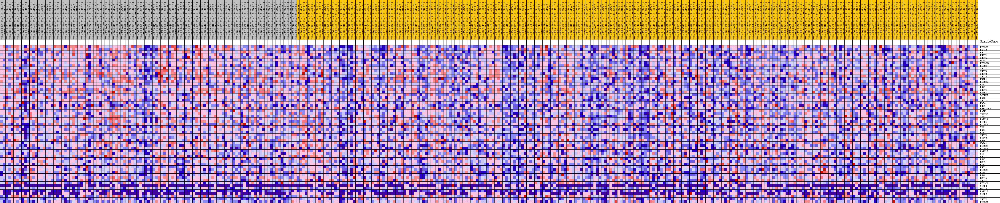
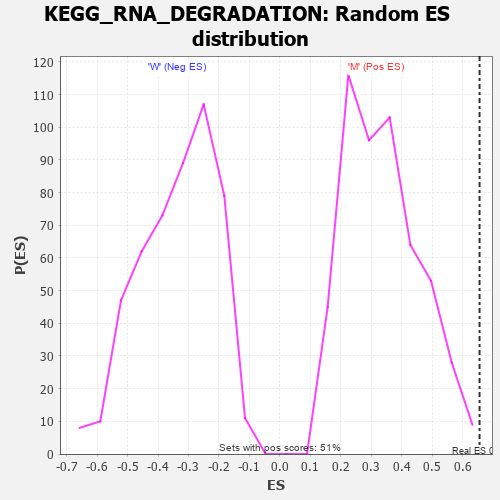

Profile of the Running ES Score & Positions of GeneSet Members on the Rank Ordered List
| Dataset | MUC16.MUC16.cls#M_versus_W.MUC16.cls#M_versus_W_repos |
| Phenotype | MUC16.cls#M_versus_W_repos |
| Upregulated in class | M |
| GeneSet | KEGG_RNA_DEGRADATION |
| Enrichment Score (ES) | 0.655176 |
| Normalized Enrichment Score (NES) | 1.9491924 |
| Nominal p-value | 0.0058365758 |
| FDR q-value | 0.043833073 |
| FWER p-Value | 0.117 |
| PROBE | DESCRIPTION (from dataset) | GENE SYMBOL | GENE_TITLE | RANK IN GENE LIST | RANK METRIC SCORE | RUNNING ES | CORE ENRICHMENT | |
|---|---|---|---|---|---|---|---|---|
| 1 | EXOSC9 | na | 105 | 0.230 | 0.0428 | Yes | ||
| 2 | HSPA9 | na | 376 | 0.190 | 0.0747 | Yes | ||
| 3 | ENO1 | na | 685 | 0.167 | 0.1017 | Yes | ||
| 4 | PNPT1 | na | 707 | 0.166 | 0.1336 | Yes | ||
| 5 | CNOT6L | na | 775 | 0.162 | 0.1639 | Yes | ||
| 6 | DCPS | na | 807 | 0.160 | 0.1945 | Yes | ||
| 7 | EXOSC10 | na | 886 | 0.156 | 0.2234 | Yes | ||
| 8 | EXOSC2 | na | 892 | 0.155 | 0.2535 | Yes | ||
| 9 | CNOT7 | na | 992 | 0.150 | 0.2809 | Yes | ||
| 10 | CNOT9 | na | 1076 | 0.147 | 0.3080 | Yes | ||
| 11 | CNOT8 | na | 1214 | 0.141 | 0.3330 | Yes | ||
| 12 | CNOT6 | na | 1255 | 0.140 | 0.3595 | Yes | ||
| 13 | HSPD1 | na | 1258 | 0.140 | 0.3866 | Yes | ||
| 14 | EXOSC7 | na | 1264 | 0.140 | 0.4137 | Yes | ||
| 15 | LSM1 | na | 1318 | 0.138 | 0.4395 | Yes | ||
| 16 | LSM2 | na | 1358 | 0.136 | 0.4651 | Yes | ||
| 17 | CNOT1 | na | 1408 | 0.134 | 0.4903 | Yes | ||
| 18 | PATL1 | na | 1727 | 0.124 | 0.5087 | Yes | ||
| 19 | ZCCHC7 | na | 2102 | 0.114 | 0.5241 | Yes | ||
| 20 | LSM6 | na | 2116 | 0.114 | 0.5459 | Yes | ||
| 21 | CNOT10 | na | 2197 | 0.112 | 0.5662 | Yes | ||
| 22 | EDC4 | na | 2705 | 0.102 | 0.5768 | Yes | ||
| 23 | ENO2 | na | 3579 | 0.088 | 0.5780 | Yes | ||
| 24 | MPHOSPH6 | na | 3657 | 0.087 | 0.5934 | Yes | ||
| 25 | PARN | na | 3739 | 0.085 | 0.6086 | Yes | ||
| 26 | TENT4A | na | 3918 | 0.083 | 0.6215 | Yes | ||
| 27 | XRN2 | na | 4109 | 0.081 | 0.6337 | Yes | ||
| 28 | PAPOLA | na | 4908 | 0.070 | 0.6329 | Yes | ||
| 29 | MTREX | na | 5018 | 0.069 | 0.6443 | Yes | ||
| 30 | EXOSC4 | na | 5771 | 0.061 | 0.6426 | Yes | ||
| 31 | XRN1 | na | 5812 | 0.061 | 0.6537 | Yes | ||
| 32 | LSM4 | na | 6798 | 0.051 | 0.6457 | Yes | ||
| 33 | DIS3 | na | 7164 | 0.048 | 0.6484 | Yes | ||
| 34 | CNOT3 | na | 7693 | 0.044 | 0.6473 | Yes | ||
| 35 | SKIV2L | na | 7843 | 0.042 | 0.6528 | Yes | ||
| 36 | DDX6 | na | 8143 | 0.040 | 0.6552 | Yes | ||
| 37 | WDR61 | na | 8827 | 0.034 | 0.6495 | No | ||
| 38 | EXOSC8 | na | 9514 | 0.029 | 0.6426 | No | ||
| 39 | EXOSC5 | na | 10441 | 0.021 | 0.6300 | No | ||
| 40 | PAPOLG | na | 11245 | 0.016 | 0.6186 | No | ||
| 41 | C1D | na | 11510 | 0.014 | 0.6165 | No | ||
| 42 | EDC3 | na | 12498 | 0.008 | 0.6002 | No | ||
| 43 | LSM7 | na | 13073 | 0.004 | 0.5905 | No | ||
| 44 | DCP2 | na | 13655 | 0.000 | 0.5801 | No | ||
| 45 | LSM3 | na | 15375 | -0.002 | 0.5493 | No | ||
| 46 | ENO3 | na | 15839 | -0.004 | 0.5417 | No | ||
| 47 | EXOSC3 | na | 15847 | -0.004 | 0.5423 | No | ||
| 48 | LSM5 | na | 17660 | -0.014 | 0.5122 | No | ||
| 49 | LSM8 | na | 18663 | -0.019 | 0.4977 | No | ||
| 50 | DCP1A | na | 20998 | -0.030 | 0.4612 | No | ||
| 51 | CNOT4 | na | 23258 | -0.039 | 0.4279 | No | ||
| 52 | EXOSC6 | na | 25071 | -0.046 | 0.4041 | No | ||
| 53 | C1DP3 | na | 29279 | -0.062 | 0.3399 | No | ||
| 54 | DCP1B | na | 30011 | -0.064 | 0.3391 | No | ||
| 55 | PAPOLB | na | 36976 | -0.086 | 0.2296 | No | ||
| 56 | C1DP2 | na | 40863 | -0.098 | 0.1784 | No | ||
| 57 | TTC37 | na | 46661 | -0.121 | 0.0968 | No | ||
| 58 | CNOT2 | na | 51124 | -0.148 | 0.0449 | No | ||
| 59 | EXOSC1 | na | 51858 | -0.155 | 0.0617 | No |

